السلسلة 95
السيارة (صنف B) · 25 سؤال. كل سؤال فيه الصورة والصوت. اختار الجواب (ولا جوج إلا كانو صحاح)، ورك على «تأكيد» باش تشوف واش صبتي.
- 25سؤال
- 20باش تنجح
- 1 – 4جواب واحد ولا أكثر
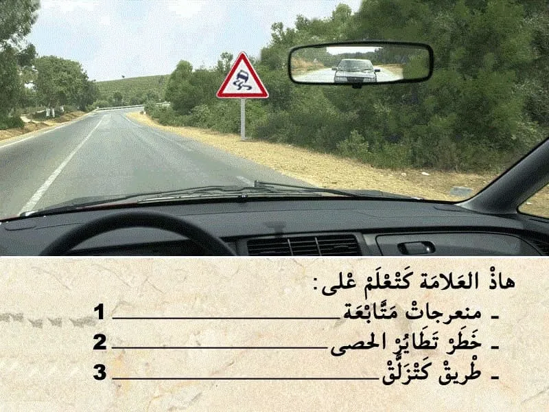
الكلافيي: 1–4 للجواب، Enter للتأكيد وللسؤال الجاي.
السلسلة 95 · النتيجة ديالك
0 / 25
السلسلة 95
السيارة (صنف B) · 25 سؤال، بالصوت، مع الجواب الصحيح والشرح.
السؤال 1
بيّن الجواب
الجواب الصحيح: 3
هذا العلامة . هي علامة ديال الخطر .
- كتعلم على انا هذا الطريق كتزلق . هناك خطر إنزلاق العربة.
و بالتالي الجواب الصحيح هو رقم 3.السؤال 2
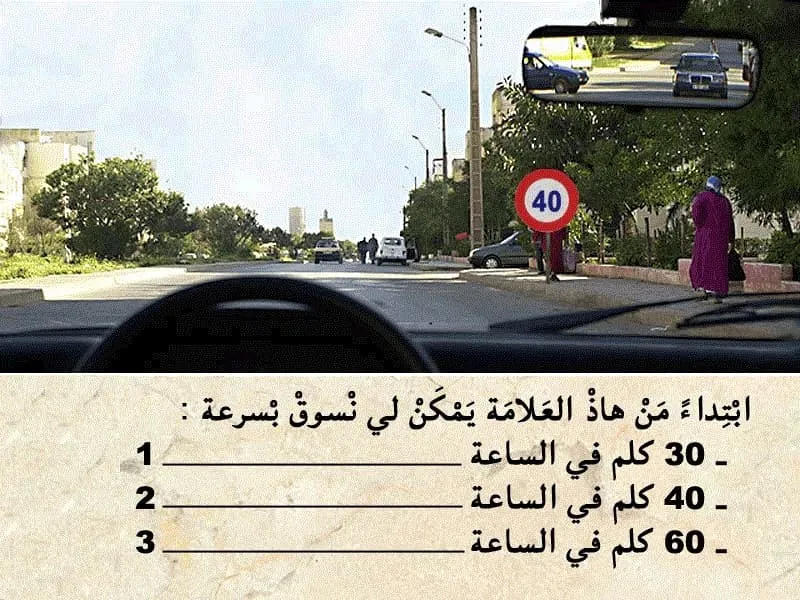
بيّن الجواب
الجواب الصحيح: 1 و 2
هذا العلامة ديال المنع. "تحديد السرعة"
كتعلم على انه ممنوع السير بأكثر من 40 كلم في الساعة.
✅ يمكن لي نمشي ب 30 و 40 كلم في الساعة.السؤال 3
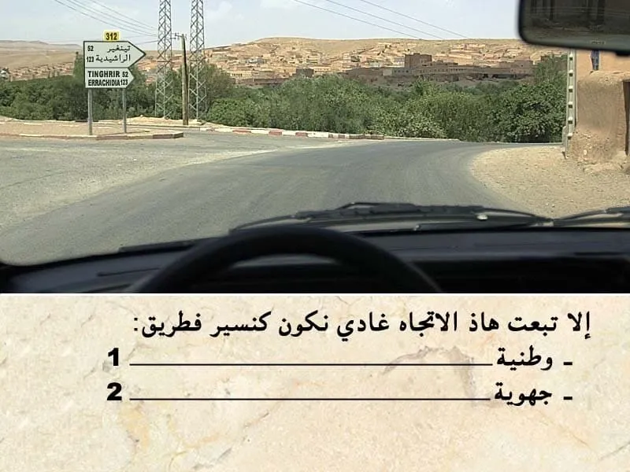
بيّن الجواب
الجواب الصحيح: 2
التشوير الطرقي كيضم علامة ديال الإرشاد.
فوق منها أرقام باللون الاصفر . كيعني انه تبعت هذا الإتجاه غادي نكون في طريق جهوية.السؤال 4
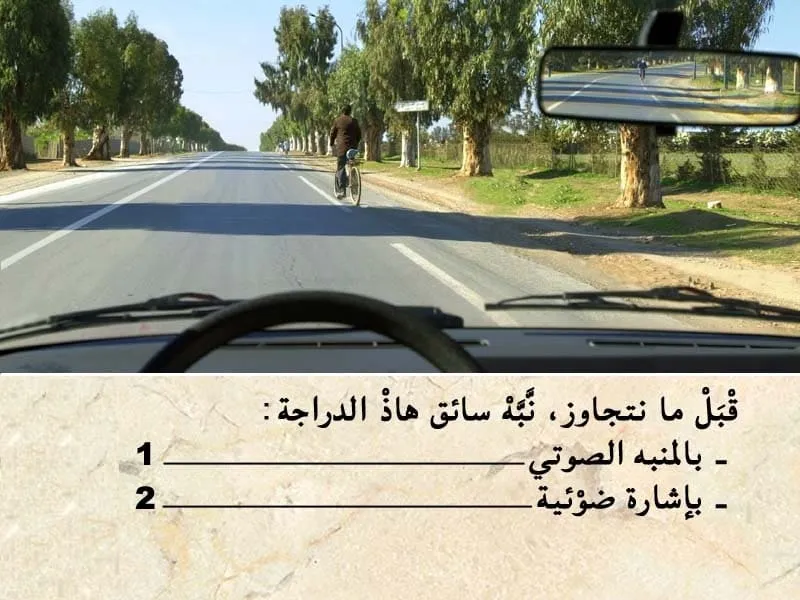
بيّن الجواب
الجواب الصحيح: 1
باش نتجاوز هذا سائق الدراجة. يجب عليا تنبهه.
في هذا الحالة سائق الدراجة ما كيتوفرش على مرأة عاكسة . يا شنبه بإشارة ضوئية.
- خارج التجمع السكني يمكن لي نبه بالمنبه الصوتي.السؤال 5
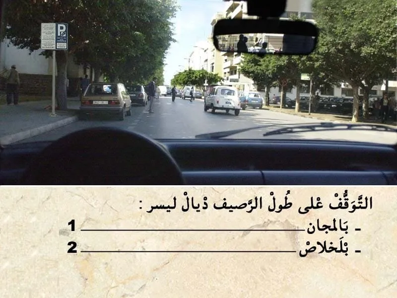
بيّن الجواب
الجواب الصحيح: 2
هذا العلامة ديال الإرشاد.
كتعلم على أن التوقف بالاداء .السؤال 6
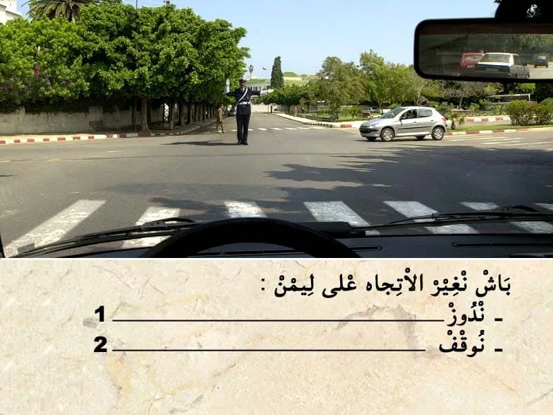
بيّن الجواب
الجواب الصحيح: 2
في ملتقى الطرق مع وجود الشرطي او الدركي .
من الواجب نتبع إشارة شرطي المرور .
في الحالة الشرطي داير لجهتي و بالتالي واجب عليا نوقف و ننتظر الإشارة ديالوا.السؤال 7

بيّن الجواب
الجواب الصحيح: 2
الضوء الأصفر كيعلم على انه مباشرة غادي يشعل الضوء الاحمر و بالتالي نوقف.
السؤال 8

بيّن الجواب
الجواب الصحيح: 2
الضريبة الخصوصية على السيارات. من الواجب تكون الأوراق ديال السيارة و يجب الإدلاء بها عند كل مراقبة.
السؤال 9
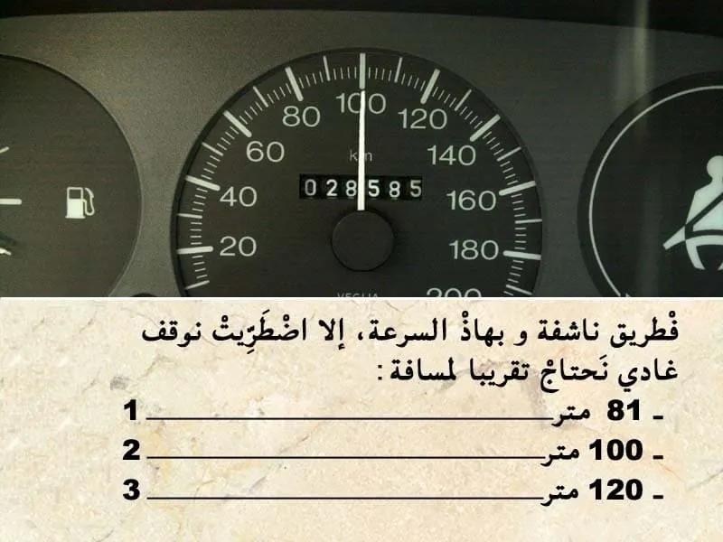
بيّن الجواب
الجواب الصحيح: 2
مسافة التوقف كيتم حسابها بالعلاقة التالية :
- العشر ديال الصعة مضروب في نفسه . يعني في هذه الحالة :
- السرعة 100 كلم في الساعة .
و بالتالي مسافة التوقف : 10*10=100 متر.
--- يعني الجواب رقم 2.السؤال 10
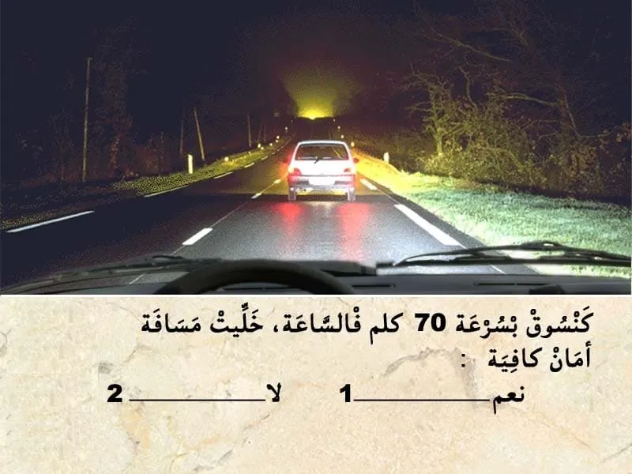
بيّن الجواب
الجواب الصحيح: 2
مسافة الامان هي العشر ديال السرعة مضروب في نفسه .
يعني 7*6=42 متر .
في هذا الحالة باش نعرف المسافة الفاصلة غادي نعتمد على الخطوط .
كل خط لي في جنب الطريق طول ديالو 20 متر و بين كل خط و خط 6 متر .
إلا لاحظت في هذا الوضعية عندي خط ما كاملش . و بالتالي اقل من 20 متر .
و بالتالي المسافة غير كافية.السؤال 11
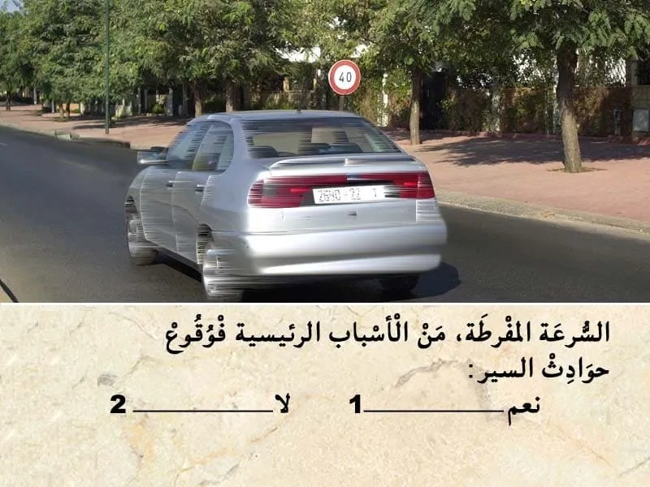
بيّن الجواب
الجواب الصحيح: 1
السرعة و التهور من بين الأسباب الرئيسية لي كتسبب في حوادث السير.
السؤال 12
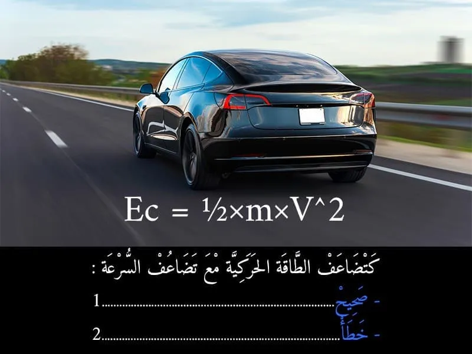
بيّن الجواب
الجواب الصحيح: 2
لتوضيح تأثير الكتلة على قيمة الطاقة الحركية، نعتبر مجموعة من المركبات تسير بنفس السرعة (نوضح ذلك لقيمتين مختلفتين من السرعة 30 و 60 كلم/س):
المركبة
كتلتها : 1250 كلغ
السرعة 30 كلم\س : الطاقة الحركية هي 43056 جول
السرعة 60 كلم\س : الطاقة الحركية هي 174306 جول
- الا قمنا بقسمة :
174306/43056 =4
يعني الا تضاعفت السرعة غادي تضرب الطاقة الحركية ف 4السؤال 13
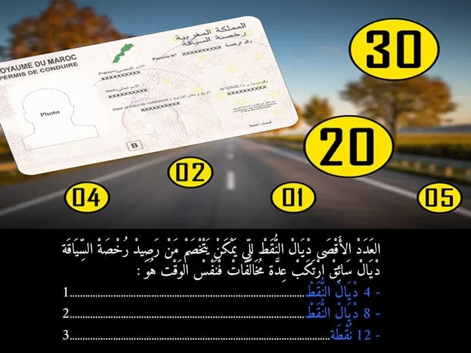
بيّن الجواب
الجواب الصحيح: 2
إذا تعددت المخالفات المرتكبة في آن واحد، فإن عدد النقط الواجب خصمها من رصيد النقط يساوي 8 نقط على الأكثر.
السؤال 14

بيّن الجواب
الجواب الصحيح: 1 و 2
هذا العلامة ديال المنع. "تحديد السرعة"
كتعلم على انه ممنوع السير بأكثر من 40 كلم في الساعة.
✅ يمكن لي نمشي ب 30 و 40 كلم في الساعة.السؤال 15

بيّن الجواب
الجواب الصحيح: 3
هذا التشوير الطرقي "الارمة" مصبوغة باللون الأحمر و بالتالي كتعلم على ان الطريق هي طريق وطنية .
وبالتالي السرعة محدودة في 100 كلم في الساعة .السؤال 16
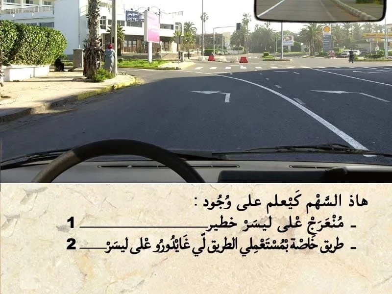
بيّن الجواب
الجواب الصحيح: 2
السهم المرسومة على الأرض سهم ديال الاجبار .
- كيعلم بلي إجباري عليا ندور على ليسر في ملتقى الطرق المقبل .السؤال 17
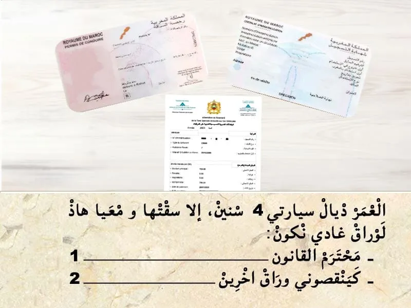
بيّن الجواب
الجواب الصحيح: 2
مجموع الأوراق لي من الواجب نتوفر عليها باش نسوق سيارة :
- رخصة السياقة.
- البطاقة الرمادية.
- شهاذة تأمين.
- الضريبة السنوية.
و في حالة تجاوز العمر ديالها 5 سنين. من الواجب التوفر على :
- شهادة الفحص التقني.
و بالتالي كينقصوني وراق اخرين .لي هي شهادة التأمين.السؤال 18

بيّن الجواب
الجواب الصحيح: 1
فهذا ملتقى الطرق بغياب التشوير الطرقي . الأسبقية للي جاي من جهت ليمن .
فهذا الحالة واجب عليا نعطي حق الأسبقية للي جاي من جهت ليمن..السؤال 19

بيّن الجواب
الجواب الصحيح: 2
هذا العلامة ديال الخطر.
👇-كتعلم على خطير مكان كيتواجدوا فيه الأطفال .
- الخطر داخل التجمع السكني كيكون على بعد 50 متر .
يعني الجواب الصحيح هو 2.السؤال 20
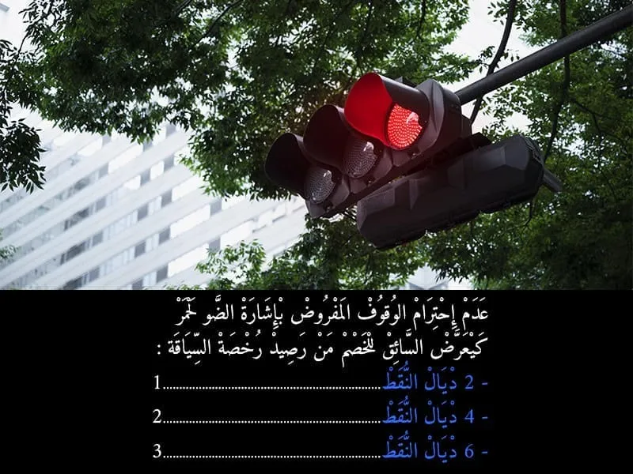
بيّن الجواب
الجواب الصحيح: 2
عدم احترام الوقوف الاجباري المفروض بالضوء الاحمر كيتعتبر مخالفة من الدرجة الاولى. و كيتم خصم 4 نقاط من رصيد رخصة السياقة . و غرامة مالية 700 درهم .
- في حالة اداء الغرامة في اجل 24 ساعة كيأدي السائق لي ارتكب المخالفة 400 درهم .
- أما في حالة الاداء في اجل 15 يوم فثمن الغرامة هو 500 درهم .
- أما في حالة عدم الادء في اجل 15 كتصبح الغرامة 700 درهم .السؤال 21
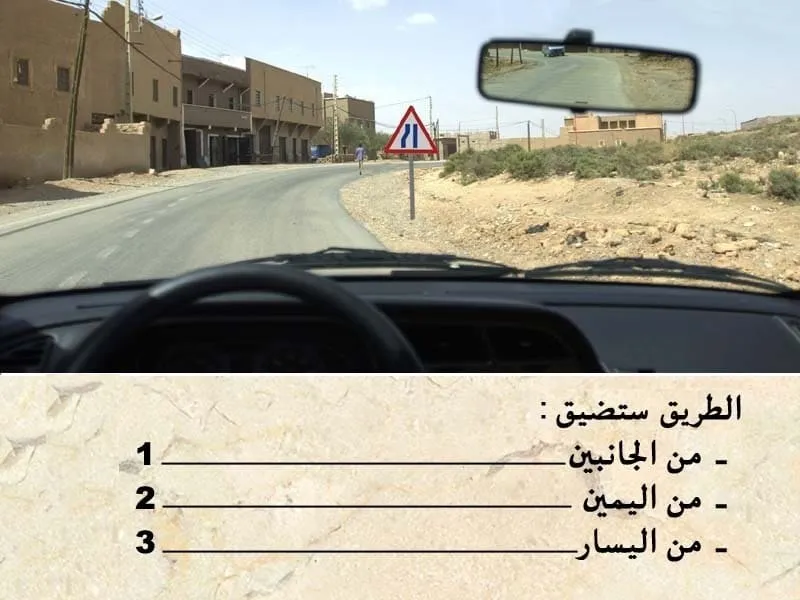
بيّن الجواب
الجواب الصحيح: 3
هذا العلامة ديال الخطر.
كتعلم انا الطريق غادي تضياق من ليسر .السؤال 22

بيّن الجواب
الجواب الصحيح: 2 و 4
من الأسباب الرئيسية لوقوع حوادث السير.
هو التهور و السرعة المفرطة.
و ليس حالة الطريق. الا كانت حالة الطريق سيئة من الواجب تخفيض السرعة .
ايضا الا كانت الطريق مبللة بالماء . من الواجب زيادة مسافة الأمان.السؤال 23
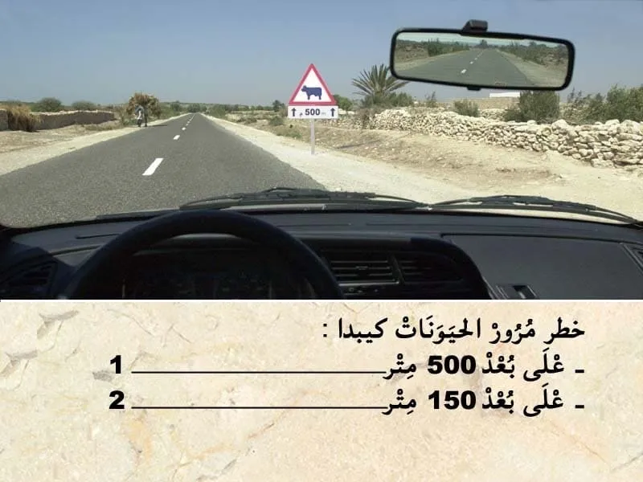
بيّن الجواب
الجواب الصحيح: 2
هذا العلامة ديال الخطر.
-كتعلم على خطير مرور حيوانات اليفة.
- الخطر خارج التجمع السكني كيكون على بعد 150 متر .
- العلامة التكميلية فيها 500 متر و اسهم للأعلى . هذا الاسهم كتعلمني على امتداد الخطر.
يعني الجواب الصحيح هو 2.السؤال 24
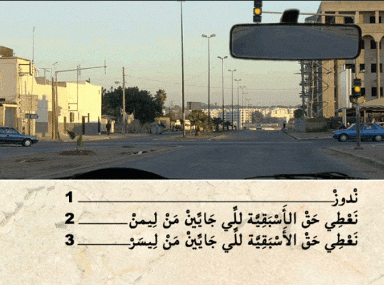
بيّن الجواب
الجواب الصحيح: 2
في حالة كان الضوء الأصفر رفراف . كيعلم بلي الضوء ثلاثي الألوان غير شغال.
و بالتالي الأسبقية للي جاي من ليمن .
في هذا الحالة واجب عليا نعطي حق الأسبقية للي جاي من جهت ليمن.السؤال 25
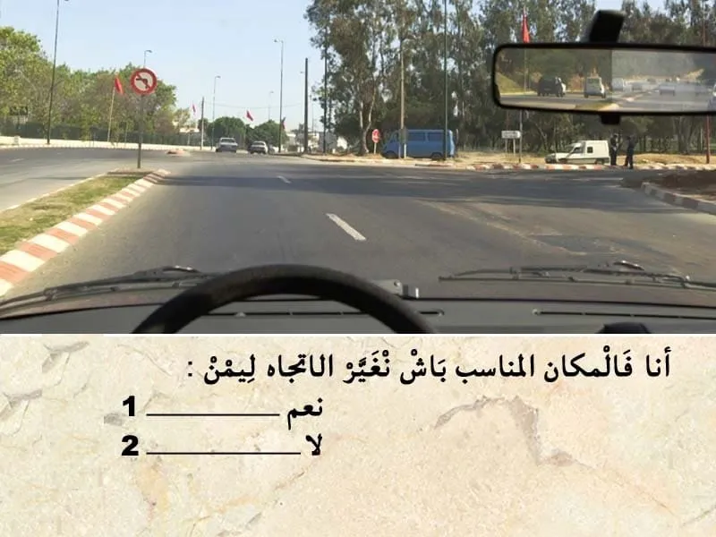
بيّن الجواب
الجواب الصحيح: 2
الطريق في الغالب كتكون مقسمة لمسالك .
في حالة الطريق لي عنده اتجاه وحيد كيكون مسلك للسير العادي و مسلك للتجاوز .
و في السير العادي من الواجب عليا نكون في المسلك لي على ليمن ديال الطريق .
اما المسلك الثاني يمكن لي نستعملوا فقط للتجاوز.
في هذا الحالة ما عنديش الحق ندور على ليمن.